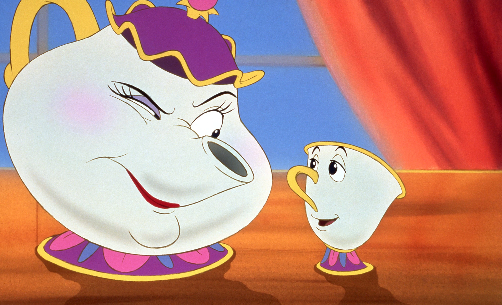

About Mrs. Potts
Mrs. Potts is an iconic sxc teapot who sings a belter of a song as Belle falls in love with her kidnapper. The true MVP <3
Mrs Potts' and Chip
Mrs Pott's Characteristics
- She is a single mother
- She has curves like Kim K
- She is Mother
Mrs Pott's Friends
Mrs Potts has some friends that I suppose are more like annoying collegues. Click below to read more about them!